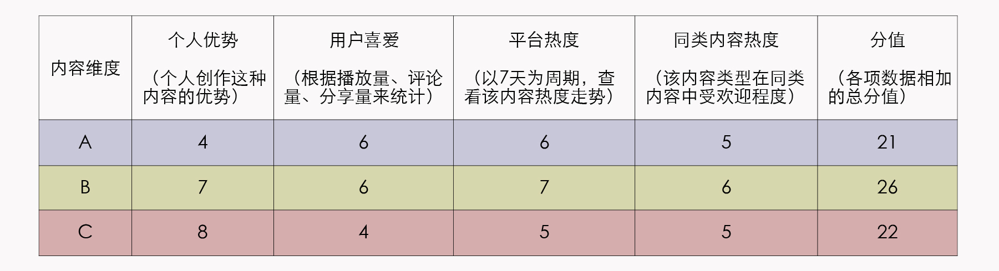
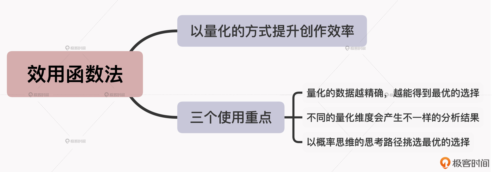

- 00 开篇词 短视频时代下，怎么把握好变现风口？.md.html
- 01 爆款短视频的底层逻辑：用心拍的短视频为啥没人看？.md.html
- 02 爆款短视频的底层逻辑：如何轻松打造自我特色？.md.html
- 03 精益创业法：如何快速跨过从0到1这道坎？.md.html
- 04 SWOT法：这么明显的个人优势你为啥就是看不到？.md.html
- 05 效用函数法：如何用量化的方式进行高效创作？.md.html
- 06 二次创新实验法：如何打造个人的差异化定位？.md.html
- 07 平台定位：如何选择最适合自己的创作平台？.md.html
- 08 如何快速找到各大短视频平台的正确切入点？.md.html
- 09 选题（上）：如何利用思考清单找到合适选题？.md.html
- 10 选题（下）：如何为不同的内容定制合适选题？.md.html
- 11 优劣分析法：如何快速筛选适合创作的视频素材？.md.html
- 12 标题（上）：如何利用微创新巧妙找到爆款标题？.md.html
- 13 标题（下）：如何用对号入座的方式抓住标题亮点？.md.html
- 14 视频封面（上）：如何快速抓住用户注意力？.md.html
- 15 视频封面（下）：如何传递最有价值的信息？.md.html
- 16 视频剪辑：如何轻松掌握视频化剪辑的三大公式？.md.html
- 17 效果反馈法：剪辑很容易，为什么你却一直学不会？.md.html
- 18 剪辑对比（上）：如何避开常见的短视频剪辑陷阱？.md.html
- 19 剪辑对比（下）：如何利用剪辑技巧提升视频质量？.md.html
- 20 拉片法：用电影创作的方式学习爆款短视频运营技巧.md.html
- 21 用户留存率：为什么粉丝很多但忠实拥趸却很少？.md.html
- 22 点赞率（上）：如何有效提升短视频的点赞量？.md.html
- 23 点赞率（下）：三种方法轻松提升用户对内容的认可度.md.html
- 24 上瘾机制：为什么视频观看量很高却没人留言？.md.html
- 25 避坑指南：为什么很多短视频账号中途做不下去了？.md.html
- 26 如何找到适合自己的短视频变现模式？.md.html
- 27 多元化变现：如何明确不同创作阶段的变现任务？.md.html
- 28 多内容变现：不同内容的主打变现模式是什么？.md.html
- 结束语 一切成大事者，都是终身学习者.md.html
- 捐赠
05 效用函数法：如何用量化的方式进行高效创作？
你好，我是周维。这节课我们来聊聊如何用量化的方式进行高效创作。
在开始今天的讨论之前，我们先来看一个小故事。
小明今年刚毕业，通过秋招拿到了两个大厂的实习生offer，一个薪水高、一个福利好，每个都有吸引小明的地方，那怎么才能选出一个更适合自己的offer呢？
小明想了一个办法，他把自己认为的几个重要的好工作要素列了出来，包括薪水、距离、福利、晋升空间、同事关系、领导能力、学习经验等，然后根据这些要素，从1~10分别为两个offer进行打分。
- offer“A”：薪水7分，距离1分，福利3分，晋升空间3分，同事关系3分，领导能力3分，学习经验2分，共23分。
- offer“B”：薪水4分，距离4分，福利5分，晋升空间2分，同事关系3分，领导能力5分，学习经验4分，共27分。
最后，小明从自己的需求出发，选择了综合分值更高的offer“B”。
故事就讲到这儿，你会不会也有相似的经历呢？其实我估计大部分人在面临一些重要选择时，都会纠结好一阵儿时间，但纠结半天也没得出什么结论，最后只好两眼一闭，随便选了一个，也不管自己未来会不会后悔。
而这个故事里的小明，就用了一种非常聪明的方式来化解自己纠结的心理。这个方式就是通过理性的视角将选择量化，根据量化后的结果清晰地找到适合自己的最终答案。这种量化方式，我称之为“效用函数法”。
实际上，这个概念在经济学领域被广泛使用，一般人们会通过效用函数来表示想要优化的量，以此来衡量投入与产出之间的关系。我举个不太现实的例子，你给自己定了一个“要赚很多钱”的目标，但这个目标过于模糊和庞大，你实现起来会很迷茫。那么根据效用函数法，你其实可以将这个大目标拆分为几个不同发展阶段的小目标，然后定期来衡量自己在当前阶段的收入是否达到了最大化，这样就更有利于“赚钱”这个目标的实现。
当然，在课程里我并不会去讲什么复杂的算法或公式，我的目的是要让你理解，如何通过效用函数中的量化手段，来解决短视频创作中的内容定位问题，以此认清自己创作的方向，提升创作效率。
好，下面我们就来具体看看吧。
创作前期，如何找到适合自身的最优选择？
现在你可以回想一下，你在刚开始创作短视频的时候，会不会面临这样的问题：自己的兴趣爱好很多，涉猎广泛，觉得什么内容都能做，但是哪类创作方向才是最好的选择呢？
对于短视频创作者来说，具备过人的特长之处确实会更容易让内容出彩，但问题是我们在刚入局短视频领域时，根本无法投入那么多的时间和精力去分别创作不同内容方向的短视频，而且在创作前期就让内容分流，也会导致用户注意力的转移，不利于建立和巩固自己的专属用户池。
所以，我们一定要找到一个最适合自己的内容方向，等到做成一定规模之后，再开拓其他的创作领域，这才是最稳妥的创作之路。
那么在前期创作时，我们要如何确定最适合自己的内容方向呢？下面我通过一个例子来给你解答一下。
假如你的本职工作是一名程序员，在工作过程中逐渐积攒了一些解决问题的经验，而且对技术也有自己的独特理解，那么通过短视频的方式去记录、分享就再好不过了。
不过，你平时也非常喜欢健身，也在健身领域里走了不少弯路，所以你认为把这些健身误区分享出来，也会让很多人受益匪浅。
那么，到底哪种内容创作方向才是最优的呢？
在上节课，我们学习了如何根据SWOT分析法找到个人优势。所以，既然是要找内容创作的最优方向，那我们就可以从个人优势着手，看看自己比别人强的地方在哪，然后通过效用函数的量化方法进行对比分析，从而找到答案。
好，下面我们就来具体分析一下，在这个案例中“你”要如何找到最优选择。
在开始分析之前，你可以先来制定一下量化标准：
- 提取四个自己认为最关键的决定创作方向的因素：背景优势、知识储备、发展方向、投入时间。
- 每个选项的分值设定为0~10分，四个选项分值相加最高即为最优选择。
然后，你就可以依据这四个方面，对号入座地分析前面提到的两种内容方向了。
第一项是背景优势。背景优势就是指“你”的本职工作或者是已经取得的一些成就。
比如，对于技术知识这个内容方向，你的优势就是已经在BAT这样的互联网公司工作多年；而另一边的健身方向，你没有任何成绩，这样技术类分值就要比健身类分值高。反之亦然。
第二项是知识储备。意思就是在这两个内容方向上，哪一个经过你自己的实践，转化成的知识储备更多、更足，你就优先选择哪一个。比如这里，你的健身知识储备得更多，而技术知识还需要再经过一定的实践验证。
第三项是发展方向。请注意，这里所说的发展方向，是指你今后的职业发展方向。比如你今后想继续在技术领域中深耕，成为技术大神，那么就建议你首先选择技术知识的分享，这样你也可以将创作短视频作为你通向自己职业理想的阶梯。
不过，如果你想转换一下职业身份，渴望成为一名健身圈升起的新星，那么就建议你可以从健身知识分享开始。
第四项是投入时间。这个衡量的标准就很简单了，就是基于你目前的知识储备，看看哪一类内容创作耗费的时间越少，得到的分值就越高。
比如，创作技术分享的内容对你来说轻车熟路，你不但有实践经验，也形成了系统全面的知识体系，根本不用在专业知识的梳理上下工夫；而对于健身知识的输出，你得从0开始总结，要耗费大量的时间，那么这个创作方向就要退而求其次了。
最后，按照这个分析逻辑，假设我们对比的结果如下：
- 技术知识分享：背景优势6分，知识储备6分，发展方向7分，投入时间5分，共24分。
- 健身知识分享：背景优势5分，知识储备7分，发展方向4分，投入时间4分，共20分。
如此一来，你也就明确了技术知识分享才是自己的最优选择。
所以说，通过这样的量化手段，我们就能够在前期创作短视频时，快速且高效地找到最优的创作方向或内容定位，为自己的创作之路打好基础。
使用效用函数法需要注意三个要素
那到这里，你可能要问了：既然效用函数法如此好用，我是不是就不用再担心创作方向的问题，只要遇到琢磨不定的选择，直接拿出几个选项量化一下就可以了？
当然不是的，效用函数法并非是万能药。在具体实践的时候，我们还需要注意以下三个重点，才能够更好地避免“选择陷阱”，也就是单纯为了选择而选择，反而离真正适合自身的最优选项越来越远。因为当你选择了不同的前提条件，就会产生不同的答案。而且，如果你没有在具体、实际的场景下去分析问题，得到的答案也不可能是精准的。
1. 量化的数据越精确，越能得到最优的选择
我们在量化分析一些拿不准的选项或犹豫不决的选择时，要注意提取数据的精确度。也就是说，我们分析的每一个维度都应该是自己最在乎的，或者是跟选项/选择息息相关的，因为越是精确，得到的答案就越是真实。
我给你总结了一个公式：
最优选择=每个选择的精确细分+与主体关联紧密的每个因素
比如在前面的案例中，我们是从背景优势、知识储备、发展方向、投入时间四个维度进行分析的，如果想要得到更精确的结论，我们还可以再将维度拆解为个人喜好、专业程度等。我们拆分得越具体，而且拆分的因素都跟主体有直接关系时，那么答案也就是最优的选择了。
2. 不同的量化维度会产生不一样的分析结果
俗话说：横看成峰侧成岭，远近高低各不同。站在不同的维度上就会找到不一样的答案。
所以，当你使用效用函数法去寻找最优选择时，一个最大的前提就是要先明确你是站在谁在立场上、目的是什么。因为有什么样的问题，就有什么样的答案，当你带着清晰的问题去详细拆分每一个选项时，你才会得到想要的答案。
3. 以概率思维的思考路径挑选最优的选择
到这里，你大概也清楚了，其实效用函数法的核心就是以概率的思维去量化不同的选择。具体来说，就是以可量化、可衡量的方式，将不确定的判断变成确定的过程，然后通过降低创作过程中各个环节的出错率，找到正确的创作方法，从而提高内容成为爆款的几率。
概率的定义只要学过初中数学基本就能明白，而这里的概率思维就是说，你要懂得用一些量化的手段、数字、图标等清晰、直观的方式，来确定那些不确定的命题。
比如可以像这样列表格来确定自己要选择的内容维度：- 
所以，效用函数的背后就是一种概率思维的思考路径，它可以让你在创作过程中减少因感性思维带来的主观臆断后果，多了一些理智的判断，从而提高成功的概率。
小结
在前期的短视频创作中，利用效用函数的量化方式，可以有效提升我们的创作效率，助力我们找到最优的内容方向。这节课，我提到了使用效用函数法的三个重点，分别是要重视量化的数据、问题的角度以及概率思维的思考路径。
那么，对于效用函数法有没有更直白的理解呢？
这里我想给你分享一句话：当别人用标签谈论事情时，我们讨论事实；当别人用抽象的方法认知世界时，我们回到具体。说白了，就是看问题要具体、直观，才能让我们的选择更加准确。
所以在使用效用函数法的时候，我们一定要时刻牢记：不要只是根据自己的主观臆断去判定什么适合、什么不合适，而是要以理性的方式、通过量化的手段来看待不同的创作选项，只有这样的创作方法，才能真正帮你找到适合自己的最优选择。
如果你在生活、工作中也遇到了犹豫不定的选择，同样可以试试这个方法，很管用。

思考题
你可以回想一下，你在确定内容创作的方向时都是怎么做的？学完这节课，你会如何使用效用函数法来找到最优选择呢？欢迎在留言区分享你的做法和见解。
如果你觉得有收获，欢迎你把今天的内容分享给更多的朋友。感谢你的阅读，我们下节课再见。
© 2019 - 2023 Liangliang Lee. Powered by gin and hexo-theme-book.